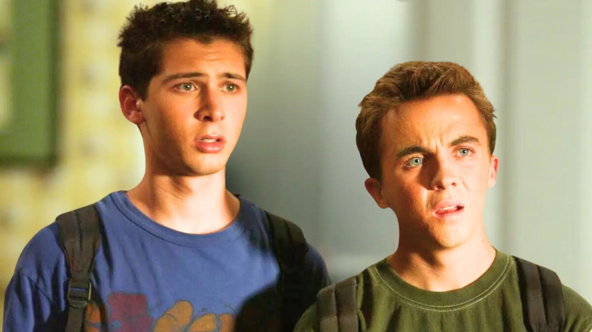

Mercredi Saison 2 : Mystères et cadavres à Nevermore
La série phénomène *Mercredi* sur Netflix revient avec une nouvelle bande-annonce pour sa saison 2, qui promet de nombreux mystères et peut-être même quelques cadavres.
Lire plusNetflix relance sa série phare avec une ambition plus sombre. Entre mystères, tensions et montée en violence narrative, cette nouvelle saison cherche à dépasser le simple phénomène pour devenir un vrai tournant dans l'univers de la série.
Lire l'article
La série phénomène *Mercredi* sur Netflix revient avec une nouvelle bande-annonce pour sa saison 2, qui promet de nombreux mystères et peut-être même quelques cadavres.
Lire plus
La série culte Malcolm fait son grand retour sur Disney+ avec une mini-saison de quatre épisodes.
Lire plus
Après avoir été entièrement rebootée, la série God Of War pilotée par Ronald D. Moore pour Amazon Prime Video s’est vue validée pour deux saisons.
Lire plus